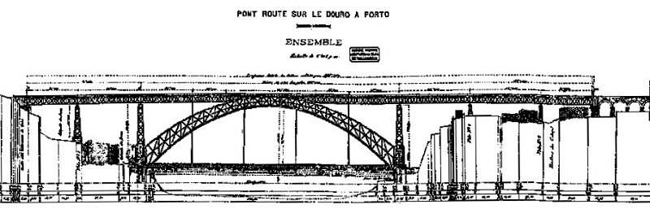
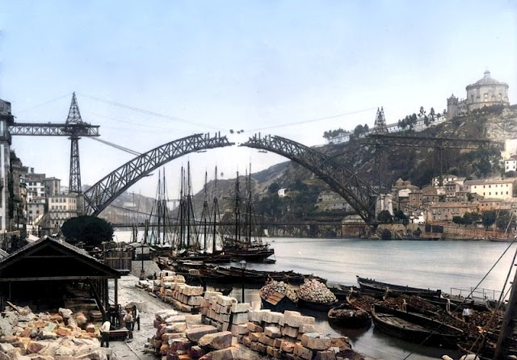

Inaugurada em 1886 e com o tabuleiro superior entregue em 1888, à época, a ponte era provavelmente a única do mundo com dois tabuleiros rodoviários e também possuía o maior arco dentre todas as demais.


Inaugurada em 1886 e com o tabuleiro superior entregue em 1888, à época, a ponte era provavelmente a única do mundo com dois tabuleiros rodoviários e também possuía o maior arco dentre todas as demais.
Até 2005 este tabuleiro (superior) permitia circulação de viaturas e peões. Com a implantação da linha de metro amarela, o tráfego ficou restrito apenas aos peões e às locomotivas.
Atualmente, neste espaço circulam a Linha D (amarela) do metro de Porto, em ambas as direções, assim como peões. Esta é uma área muito frequentada, para contemplação do sol poente e para fotografar o metro com grande proximidade.